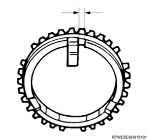
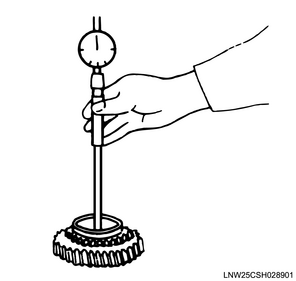
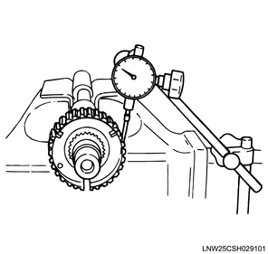

Main shaft inspection (MUA)
1. 1st block ring inspection
1. Inspect the 1st block ring.
Note
- Replace parts as needed if excessive worn or damage is discovered during inspection.
2. Measure the 1st block ring using a feeler gauge.
Note
- Measure the gap between the block ring and the dog gear.
- Replace the 1st block ring if the measured value exceeds the limit.
Standard： 1.5 mm { 0.059 in }
Limit： 0.8 mm { 0.031 in }
- Gap
2. 2nd block ring inspection
1. Inspect the 2nd block ring.
Note
- Replace parts as needed if excessive worn or damage is discovered during inspection.
2. Measure the 2nd block ring using a feeler gauge.
Note
- Measure the gap between the block ring and the dog gear.
- Replace the 2nd block ring if the measured value exceeds the limit.
Standard： 1.5 mm { 0.059 in }
Limit： 0.8 mm { 0.031 in }
- Gap
3. 3rd block ring inspection
1. Inspect the 3rd block ring.
Note
- Replace parts as needed if excessive worn or damage is discovered during inspection.
2. Measure the 3rd block ring using a feeler gauge.
Note
- Measure the gap between the block ring and the dog gear.
- Replace the 3rd block ring if the measured value exceeds the limit.
Standard： 1.5 mm { 0.059 in }
Limit： 0.8 mm { 0.031 in }

4. Top block ring inspection
1. Inspect the top block ring.
Note
- Replace parts as needed if excessive worn or damage is discovered during inspection.
2. Measure the top block ring using a feeler gauge.
Note
- Measure the gap between the block ring and the dog gear.
- Replace the top block ring if the measured value exceeds the limit.
Standard： 1.5 mm { 0.059 in }
Limit： 0.8 mm { 0.031 in }
5. Insert inspection
1. Measure the insert using a vernier caliper.
Note
- Measure the gap between the block ring and the insert.
- Replace the block ring and insert if the measured value exceeds the limit.
Standard： 3.86 to 4.16 mm { 0.152 to 0.164 in } 1st - 2nd
Limit： 4.9 mm { 0.193 in } 1st - 2nd
Standard： 3.46 to 3.76 mm { 0.136 to 0.148 in } 3rd - 4th
Limit： 4.0 mm { 0.157 in } 3rd - 4th
Standard： 3.59 to 3.91 mm { 0.141 to 0.154 in } 5th - reverse
Limit： 4.1 mm { 0.161 in } 5th - reverse

6. Main shaft inspection
1. Inspect the main shaft.
Note
- Replace parts as needed if excessive worn or damage is discovered during inspection.
2. Measure the main shaft using a dial gauge.
Note
- Inspect fluctuations in the center of the main shaft.
- Replace the main shaft if the measured value exceeds the limit.
Limit： 0.05 mm { 0.0020 in }
7. 1st gear inspection
1. Measure the 1st gear using a dial gauge.
Note
- Measure the inner diameter of the gear using an inside dial gauge.
- Replace the 1st gear if the measured value exceeds the limit.
Standard： 45.000 to 45.013 mm { 1.7717 to 1.7722 in }
Limit： 45.100 mm { 1.7756 in }

8. 2nd gear inspection
1. Measure the 2nd gear using a dial gauge.
Note
- Measure the inner diameter of the gear using an inside dial gauge.
- Replace the 2nd gear if the measured value exceeds the limit.
Standard： 52.000 to 52.013 mm { 2.0472 to 2.0478 in }
Limit： 52.100 mm { 2.0512 in }
9. 3rd gear inspection
1. Measure the 3rd gear using a dial gauge.
Note
- Measure the inner diameter of the gear using an inside dial gauge.
- Replace the 3rd gear if the measured value exceeds the limit.
Standard： 45.000 to 45.013 mm { 1.7717 to 1.7722 in }
Limit： 45.100 mm { 1.7756 in }
10. 1st - 2nd clutch hub inspection
1. Inspect the 1st - 2nd clutch hub.
Note
- Set the dial indicator to the 1st - 2nd clutch hub.
- Move the clutch hub left to right as far as possible.
- Replace the 1st - 2nd clutch hub if the measured value exceeds the limit.
Standard： 0.0 to 0.1 mm { 0.000 to 0.004 in }
Limit： 0.2 mm { 0.008 in }

11. 3rd - 4th clutch hub inspection
1. Inspect the 3rd - 4th clutch hub.
Note
- Set the dial indicator to the 3rd - 4th clutch hub.
- Move the clutch hub left to right as far as possible.
- Replace the 3rd - 4th clutch hub if the measured value exceeds the limit.
Standard： 0.0 to 0.1 mm { 0.000 to 0.004 in }
Limit： 0.2 mm { 0.008 in }